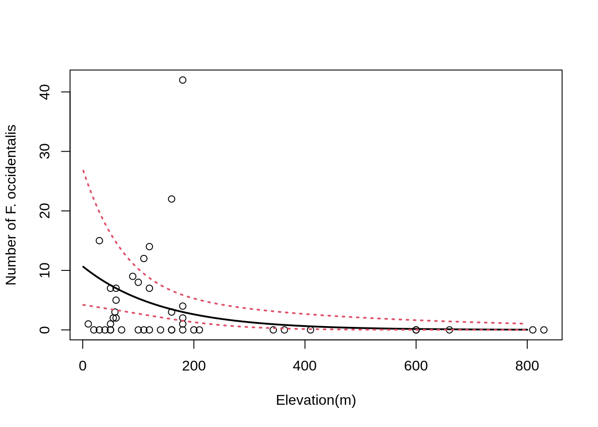
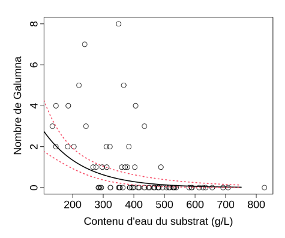

Chapter 11 Negative binomial GLMs
GLM with a negative binomial (NB) distribution are favored when overdispersion is extreme. The NB distribution contains an additional parameter k, particularly handy for count data containing a preponderance of zeros. Before we go into R stuff, we should see what lies behind a negative binomial GLM. A NB distribution is actually a combination of two distributions: a Poisson distribution and a gamma distribution. The NB distribution first assumes that a discrete random variable is Poisson distributed but its mean, µ is assumed to follow a gamma distribution. The mixture between the Poisson and gamma distributions can be simplified into a density function specific to the NB which has two parameters µ and k.
Y ~ NB(µ, k)
E(Y) = µ and Var(Y) = µ + µ²/k
Here, we can see how overdispersion will be accounted for by NB distribution in GLMs. The second term of the variance determines the amount of overdispersion. In fact, it is indirectly determined by k, where k is also called the dispersion parameter. If k is large (relative to μ²), the second term, µ²/k approximates 0, and the variance of Y is μ. In such cases the NB converges to the Poisson distribution and you might as well use a Poisson distribution. The smaller k, the larger the overdispersion. Just like with others GLMs, a NB GLM is specified following the fundamental three steps. It first assumes that Yi is negative binomial distributed with mean μi and parameter k.
Yi ∼ NB(µi, k)
E(Yi) = µi and Var(Yi) = µi + µi²/k
The two last steps define the systematic part and the link function between the mean of Yi and the predictor function. In NB GLMs the link function is logarithmic ensuring that fitted values are always positive.
- log(µi) = β0 + Xi.β
or
- µi = exp(β0 + Xi.β)
The negative binomial GLM can be built using the glm.nb() function from
the MASS package:
##
## Call:
## glm.nb(formula = Faramea.occidentalis ~ Elevation, data = faramea,
## init.theta = 0.2593107955, link = log)
##
## Deviance Residuals:
## Min 1Q Median 3Q Max
## -1.36748 -1.17564 -0.51338 -0.05226 2.25716
##
## Coefficients:
## Estimate Std. Error z value Pr(>|z|)
## (Intercept) 2.369226 0.473841 5.00 5.73e-07 ***
## Elevation -0.007038 0.002496 -2.82 0.00481 **
## ---
## Signif. codes: 0 '***' 0.001 '**' 0.01 '*' 0.05 '.' 0.1 ' ' 1
##
## (Dispersion parameter for Negative Binomial(0.2593) family taken to be 1)
##
## Null deviance: 41.974 on 42 degrees of freedom
## Residual deviance: 36.343 on 41 degrees of freedom
## AIC: 182.51
##
## Number of Fisher Scoring iterations: 1
##
##
## Theta: 0.2593
## Std. Err.: 0.0755
##
## 2 x log-likelihood: -176.5090The summary is similar to other GLMs summaries (e.g. Poisson GLMs), though we now have a parameter theta, which stands for parameter k in the variance of the NB distribution. Its standard error is also provided, but care is needed with its use as the interval is not symmetric and we are testing on the boundary.
11.1 Plotting the final GLM to the data
The NB GLMs appear to be the best fit to our data. We can plot the relationship between the abundance of Faramea occidentalis and elevation.
Use summary to get the parameters.
## [1] 2.369226## [1] -0.007038124Use the standard errors to build the confidence envelope.
## [1] 0.4738409## [1] 0.002496143pp <- predict(glm.negbin, newdata = data.frame(Elevation = 1:800), se.fit = TRUE)
linkinv <- family(glm.negbin)$linkinv ## inverse-link function
pframe <- as.data.frame(pp$fit)
names(pframe) <- "pred0"
pframe$pred <- linkinv(pp$fit)
sc <- abs(qnorm((1-0.95)/2)) ## Normal approx. to likelihood
pframe <- transform(pframe, lwr = linkinv(pred0-sc*pp$se.fit), upr = linkinv(pred0+sc*pp$se.fit))
plot(faramea$Elevation, faramea$Faramea.occidentalis, ylab = 'Number of F. occidentalis', xlab = 'Elevation(m)')
lines(pframe$pred, lwd = 2)
lines(pframe$upr, col = 2, lty = 3, lwd = 2)
lines(pframe$lwr, col = 2, lty = 3, lwd = 2)
We can see that the number of Faramea occidentalis significantly decreases with elevation. However, the confidence envelope of the NB model is large at low elevation.
11.1.1 Challenge 3
Use the mites dataset! Model the abundance of the species Galumna as a function of the substrate characteristics (water content WatrCont and density SubsDens)
Do you need to account for overdispersion?
Which covariates have a significant effect?
Select the best model!
Drop each term in turn and compare the full model with a nested model using the command:
Specify manually a nested model, call it for example MyGLM2, and use the command:
Solution
# Poisson GLM
glm.p = glm(Galumna~WatrCont+SubsDens, data=mites, family=poisson)
# quasi-Poisson GLM
glm.qp = update(glm.p,family=quasipoisson)
# model selection
drop1(glm.qp, test = "Chi")## Single term deletions
##
## Model:
## Galumna ~ WatrCont + SubsDens
## Df Deviance scaled dev. Pr(>Chi)
## <none> 101.49
## WatrCont 1 168.10 31.711 1.789e-08 ***
## SubsDens 1 108.05 3.125 0.07708 .
## ---
## Signif. codes: 0 '***' 0.001 '**' 0.01 '*' 0.05 '.' 0.1 ' ' 1# or
glm.qp2 = glm(Galumna~WatrCont, data=mites, family=quasipoisson)
anova(glm.qp2, glm.qp, test="Chisq")## Analysis of Deviance Table
##
## Model 1: Galumna ~ WatrCont
## Model 2: Galumna ~ WatrCont + SubsDens
## Resid. Df Resid. Dev Df Deviance Pr(>Chi)
## 1 68 108.05
## 2 67 101.49 1 6.5657 0.07708 .
## ---
## Signif. codes: 0 '***' 0.001 '**' 0.01 '*' 0.05 '.' 0.1 ' ' 1